Biotehnologia farmaceutică și medicina de precizie
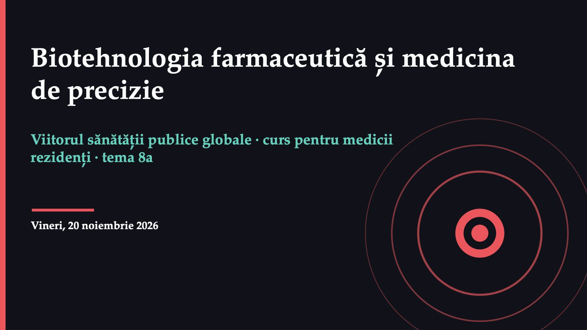
1 / 64Bună dimineața. Tema de azi este biotehnologia farmaceutică: medicamentele produse în celule vii, testele care aleg pacienții și drumul acestor medicamente până la pacientul român. O urmărim pe un caz real, pembrolizumabul, de la decizia europeană până la raportul agenției române care l-a evaluat.
?
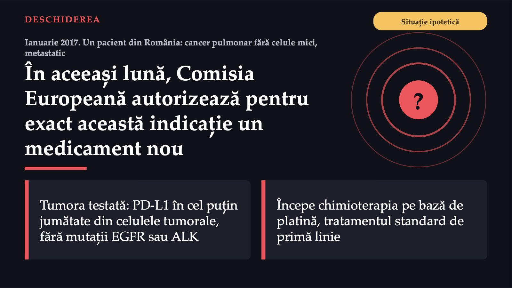
2 / 64Pacientul nu există: este construit pentru exercițiu, pentru că nu există un caz real documentat public. Documentele pe care le vedem azi sunt însă reale. Medicul lui oncolog știe că medicamentul există, că e autorizat pentru indicația lui în toată Uniunea Europeană și că nu e încă pe lista medicamentelor compensate în România. Întrebarea care ne însoțește trei ore este ce trebuie să se întâmple în România, după decizia europeană, ca acest pacient să primească medicamentul compensat, și cine decide fiecare pas.
Documentele reale: pembrolizumabul în Uniunea Europeană
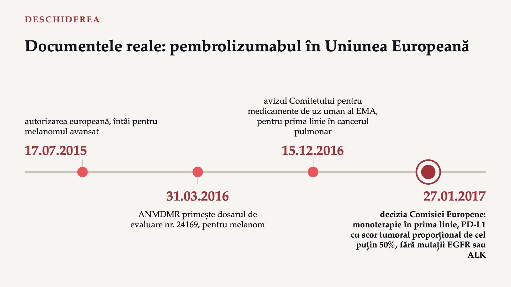
3 / 64Acestea sunt etapele publice ale medicamentului. Agenția Europeană a Medicamentului (EMA) evaluează dosarul, comitetul ei dă un aviz, iar Comisia Europeană decide pentru toate statele membre. Agenția Națională a Medicamentului și a Dispozitivelor Medicale din România (ANMDMR) evaluase deja medicamentul pentru melanom. Pentru cancerul pulmonar, decizia europeană din 27.01.2017 este punctul de plecare al cazului nostru.
?
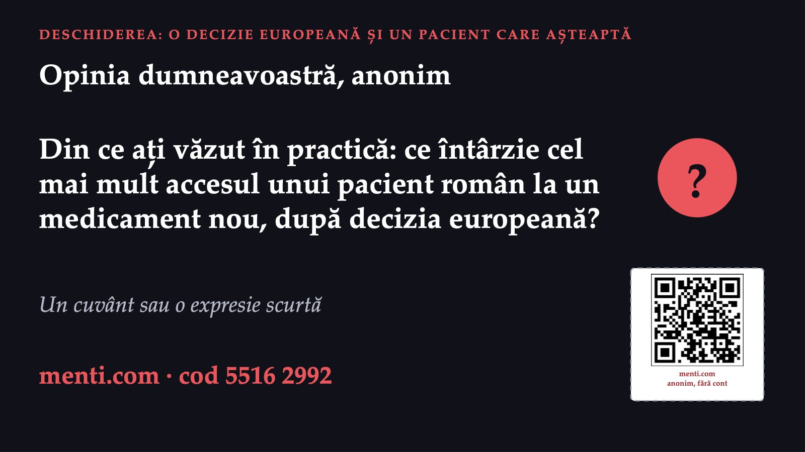
4 / 64Întrebarea cere o opinie din experiența dumneavoastră și nu se notează. Răspunsurile rămân salvate până la ultima subtemă, unde le comparăm cu drumul real al medicamentului.
Ce este pembrolizumabul
 5 / 64
5 / 64Cazul acesta conține, pe scurt, toată tema de azi: o moleculă produsă biotehnologic, un biomarker care selectează pacienții, o autorizare europeană care nu înseamnă încă acces și o decizie de finanțare luată într-o țară cu buget limitat. Ne întoarcem la el la ultima subtemă, cu raportul real al agenției pe ecran, și la final, când împărțiți un buget.
Întrebarea temei
![DESCHIDEREA: O DECIZIE EUROPEANĂ ȘI UN PACIENT CARE AȘTEAPTĂ Întrebarea temei Biotehnologia a transformat boli altădată incurabile în boli cronice sau vindecabile; accesul la aceste tratamente este profund inegal Pentru specialistul de sănătate publică: cine primește medicamentul, când, pe ce criterii și cu ce cost de oportunitate? Patru premii Nobel: 1984 anticorpii monoclonali 2018 inhibarea reglării imune negative 2020 editarea genomului CRISPR-Cas9 2023 nucleozidele modificate din vaccinurile cu ARN mesager](diapozitive/C08/006.jpg) 6 / 64
6 / 64Întrebarea nu este cum funcționează molecula, ci ce responsabilitate are specialistul de sănătate publică în era medicamentelor biologice. Patru premii Nobel jalonează drumul. În 1984, Niels Jerne, Georges Köhler și César Milstein, pentru teoriile despre sistemul imun și pentru principiul de producere a anticorpilor monoclonali. În 2018, James Allison și Tasuku Honjo, pentru terapia cancerului prin inhibarea reglării imune negative, adică exact mecanismul pembrolizumabului. În 2020, premiul pentru chimie, Emmanuelle Charpentier și Jennifer Doudna, pentru CRISPR-Cas9. În 2023, Katalin Karikó și Drew Weissman, pentru modificările nucleozidelor care au făcut posibile vaccinurile cu ARN mesager împotriva COVID-19.
168
![DESCHIDEREA: O DECIZIE EUROPEANĂ ȘI UN PACIENT CARE AȘTEAPTĂ Ce a rămas din cifrele de deschidere Raportul industriei farmaceutice europene despre disponibilitatea medicamentelor noi (W.A.I.T.), ediția cea mai recentă 168 de medicamente autorizate central între 2021 și 2024, cu datele la 5.01.2026 Media europeană: 597 de zile de la autorizare până la disponibilitatea pentru pacienți (578 în ediția precedentă) Valoarea României apare numai în graficul raportului și nu o putem atribui sigur: nu o dăm](diapozitive/C08/007.jpg) 7 / 64
7 / 64Prezentarea deschidea cu trei ordine de mărime: numărul anticorpilor monoclonali aprobați, vânzările cumulate ale celui mai vândut dintre ei și timpul de așteptare al pacienților români. Primele două nu au o sursă publică verificată și nu le folosim ca fapte. Pentru a treia, edițiile recente ale raportului nu confirmă valoarea din prezentare. Raportul este al industriei, care are un interes declarat în accesul rapid, iar „disponibilitatea” se definește diferit de la o țară la alta; îl citim ca pe un indicator util, nu ca pe o măsură neutră.
Cum lucrăm azi
![DESCHIDEREA: O DECIZIE EUROPEANĂ ȘI UN PACIENT CARE AȘTEAPTĂ Cum lucrăm azi Cinci subteme: anticorpii monoclonali și biosimilarele medicina de precizie imunoterapia în oncologie biotehnologia în vaccinologie accesul echitabil și reglementarea ? La fiecare subtemă, o întrebare de opinie pe telefon, anonimă, fără răspuns corect Pauză după a treia subtemă Spre final: raportul real al agenției române, lucrat individual, circa 20 de minute; apoi o împărțire de buget pe telefon și un joc scurt de verificare](diapozitive/C08/008.jpg) 8 / 64
8 / 64Urmăm prezentarea temei în ordinea ei, pe cinci subteme. Cazul pembrolizumabului revine la ultima subtemă, unde citim împreună raportul real al agenției, apoi lucrați individual pe el, ca un evaluator. Ședința se încheie cu o împărțire de buget, cu urmările ei calculate, și cu un joc scurt de verificare.
8a.1 · Anticorpii monoclonali: istoria și clasele
![8A.1 · ANTICORPII MONOCLONALI ȘI BIOSIMILARELE 8a.1 · Anticorpii monoclonali: istoria și clasele Tehnica hibridoamelor: un limfocit B producător de anticorp, unit cu o celulă de mielom nemuritoare Generațiile: murine himerice umanizate complet umane tot mai puțină secvență străină, imunogenicitate tot mai mică Oncologie: trastuzumab (HER2), bevacizumab (factorul de creștere al endoteliului vascular), pembrolizumab și nivolumab (PD-1) Boli autoimune: adalimumab, infliximab (factorul de necroză tumorală alfa) · boli infecțioase: nirsevimab (virusul sincițial respirator) · neurologie: ocrelizumab (scleroza multiplă)](diapozitive/C08/009.jpg) 9 / 64
9 / 64Un anticorp monoclonal este o imunoglobulină produsă de o singură clonă celulară, deci îndreptată împotriva unui singur epitop. Primele molecule terapeutice erau murine și provocau un răspuns imun împotriva lor; unul dintre primii anticorpi folosiți în clinică, muromonab-CD3, se dădea în rejetul acut de transplant. Prezentarea dă și un număr al anticorpilor aprobați; nu are o sursă verificată și nu îl folosim.
Cinci mecanisme, cinci profiluri de toxicitate
![8A.1 · ANTICORPII MONOCLONALI ȘI BIOSIMILARELE Cinci mecanisme, cinci profiluri de toxicitate Citotoxicitatea mediată celular dependentă de anticorp: fragmentul Fc atrage celulele NK Activarea complementului Blocarea unui receptor sau a unui ligand (factorul de necroză tumorală, PD-1, HER2): cel mai frecvent Transportul unei toxine în celulă: conjugatele anticorp-medicament legarea unui limfocit T de celula tumorală: anticorpii bispecifici Pentru sănătatea publică: tuberculoza reactivată, reacțiile autoimune, sindromul de eliberare de citokine; pentru fiecare, alt circuit de monitorizare](diapozitive/C08/010.jpg) 10 / 64
10 / 64Consecința practică este că „medicamentul biologic” nu este o clasă omogenă. Blocarea factorului de necroză tumorală crește riscul de tuberculoză reactivată, blocarea PD-1 produce reacții autoimune, iar anticorpii bispecifici produc sindromul de eliberare de citokine. Fiecare cere alt circuit de monitorizare, deci altă organizare a îngrijirii.
?
![8A.1 · ANTICORPII MONOCLONALI ȘI BIOSIMILARELE Farmacologia anticorpilor monoclonali (diapozitivul avansat) Timp de înjumătățire de ordinul săptămânilor: receptorul neonatal Fc îi protejează și îi reciclează, deci administrarea e la câteva săptămâni Eliminarea prin catabolism proteic și prin legarea de țintă: depinde de cantitatea de țintă, de exemplu de masa tumorală Fără metabolizare prin citocromul P450: interacțiunile importante sunt farmacodinamice ? Imunogenicitatea poate reduce eficacitatea; metotrexatul asociat adalimumabului o reduce · vaccinurile vii, contraindicate sub anticorpi imunosupresori](diapozitive/C08/011.jpg) 11 / 64
11 / 64Anticorpii monoclonali se comportă altfel decât medicamentele cu moleculă mică. Se distribuie mai ales în spațiul vascular și interstițial. Prezentarea dă intervale numerice pentru timpul de înjumătățire, biodisponibilitatea subcutanată și frecvența anticorpilor împotriva medicamentului; ele variază mult între molecule și nu le-am verificat, deci nu le preluăm.
Biosimilarul nu este un generic
 12 / 64
12 / 64Biosimilarul este un medicament biologic foarte asemănător cu un biologic de referință deja autorizat, pentru care un exercițiu de comparabilitate a arătat că nu există diferențe semnificative clinic de calitate, siguranță și eficacitate. Nu este un generic, pentru că o moleculă biologică nu poate fi reprodusă identic: demonstrează comparabilitatea, nu identitatea.
De ce contează biosimilarele pentru sănătatea publică
![8A.1 · ANTICORPII MONOCLONALI ȘI BIOSIMILARELE De ce contează biosimilarele pentru sănătatea publică Bugetul: concurența scade prețul referinței și pe al biosimilarului; banii eliberați tratează pacienți care altfel nu ar fi primit un biologic Accesul: în țările cu venit mic și mediu, adesea singura cale realistă spre tratamentele biologice Barierele: reticența unor medici și pacienți · trecerea pacientului stabil de la referință la biosimilar · felul în care protocoalele de compensare îl încurajează sau nu](diapozitive/C08/013.jpg) 13 / 64
13 / 64Cifrele prezentării despre economiile realizate cu biosimilare, despre reducerea prețului adalimumabului în unele piețe și despre primul biosimilar aprobat în Statele Unite nu au o sursă verificată; nu le folosim. Rămâne argumentul de fond: biosimilarul este principalul instrument de acces la tratamentele biologice într-un buget limitat.
Conjugatele anticorp-medicament și anticorpii bispecifici (diapozitivul avansat)
![8A.1 · ANTICORPII MONOCLONALI ȘI BIOSIMILARELE Conjugatele anticorp-medicament și anticorpii bispecifici (diapozitivul avansat) Conjugatul: anticorp + linker + citotoxic foarte puternic internalizare, eliberare în celulă, efect de vecinătate Exemple: trastuzumab emtansina, trastuzumab deruxtecanul (HER2, inclusiv cu expresie scăzută), enfortumab vedotin, sacituzumab govitecanul, loncastuximab tesirina Toxicitate proprie: pneumonita interstițială (trastuzumab deruxtecanul), neuropatia periferică, toxicitatea oculară; antigenul-țintă se testează înainte Bispecificul care angajează limfocitele T: blinatumomabul leagă CD3 de CD19; „gata de folosit”, dar cu sindrom de eliberare de citokine la începutul tratamentului](diapozitive/C08/014.jpg) 14 / 64
14 / 64Conjugatele duc citotoxicul exact la celula care exprimă antigenul; o parte trece și în celulele vecine, ceea ce contează în tumorile cu expresie neomogenă. Anticorpii bispecifici aduc limfocitul pacientului la celula tumorală fără ca acesta să fie modificat în laborator; prezentarea adaugă cevostamabul, studiat în mielomul multiplu. Spitalizarea și echipele pregătite de la începutul tratamentului sunt prețul organizatoric. Costul acestor clase și statutul lor de compensare în România nu au o sursă verificată.
Anticorpii monoclonali în bolile infecțioase
![8A.1 · ANTICORPII MONOCLONALI ȘI BIOSIMILARELE Anticorpii monoclonali în bolile infecțioase COVID-19: anticorpi împotriva proteinei spike, autorizați în regim de urgență; activitatea pierdută odată cu variantele, mai ales Omicron Nirsevimabul: o singură doză la sugar înaintea sezonului, împotriva virusului sincițial respirator; prevenție la nivel de populație ? HIV: anticorpii cu neutralizare largă, ca VRC01, testați ca prevenție Corectură față de prezentare: glecaprevirul cu pibrentasvirul, din hepatita C, sunt molecule mici de sinteză, nu medicamente biologice](diapozitive/C08/015.jpg) 15 / 64
15 / 64Lecția pandemiei este dublă: platforma anticorpilor se adaptează repede, dar un anticorp cu o singură țintă e vulnerabil la evoluția virusului. Nirsevimabul este, pentru sănătatea publică, un anticorp folosit cu logica unei vaccinări. Cifrele de eficacitate și de cost din prezentare pentru acești anticorpi nu au fost verificate pe text integral.
?
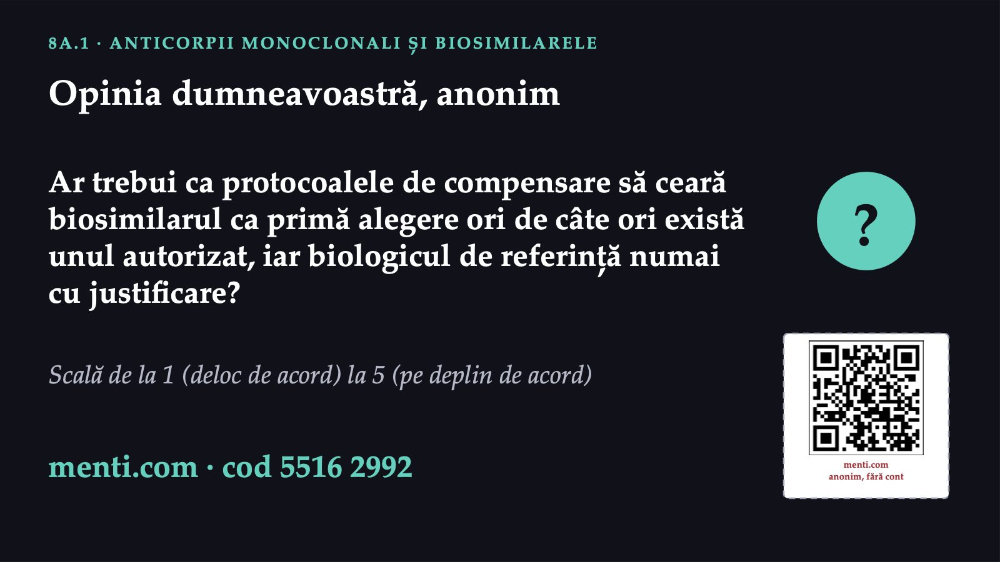
16 / 64Întrebarea cere o opinie. Gândiți-vă la pacientul stabil pe biologicul de referință și la pacientul nou, care așteaptă un biologic.
?
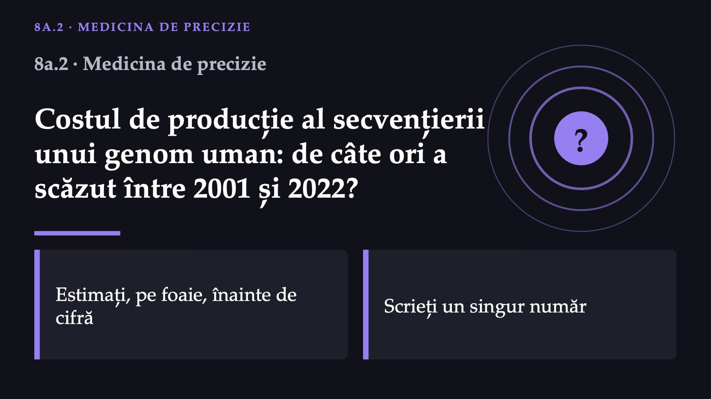
17 / 64Scrieți-vă estimarea înainte de a vedea seria oficială. Nu se strânge și nu se notează: servește ca să vedeți cât de departe era intuiția de cifra măsurată.
524,62 $
![8A.2 · MEDICINA DE PRECIZIE: GENOMICA CLINICĂ ȘI BIOMARKERII Seria NHGRI: costul de producție al unui genom uman Septembrie 2001: 95 263 072 $ mai 2022: 524,62 $ O scădere de circa 181 585 de ori, de ordinul a 180 000, nu de la „trei miliarde” la „două sute de dolari” Costul de producție nu e prețul testului clinic: interpretarea, confirmarea, consilierea și raportarea au rămas partea scumpă Panourile de gene · exomul · genomul întreg: alt cost, altă rată diagnostică, altă povară de variante cu semnificație incertă](diapozitive/C08/018.jpg) 18 / 64
18 / 64Seria Institutului Național de Cercetare a Genomului Uman din Statele Unite (NHGRI) măsoară costul de producție al secvențierii. Cifrele prezentării trebuie corectate: raportul dintre cele două valori este de circa 181 585. Discuția completă despre secvențiere, studiile de asociere și scorurile poligenice este în notele ședinței precedente.
Biomarkerii predictivi: testul decide medicamentul
![8A.2 · MEDICINA DE PRECIZIE: GENOMICA CLINICĂ ȘI BIOMARKERII Biomarkerii predictivi: testul decide medicamentul HER2 (cancerul mamar) trastuzumab KRAS sau NRAS mutant (cancerul colorectal) fără anticorpi împotriva receptorului factorului de creștere epidermal BRAF V600E (melanomul) vemurafenib BRCA1 sau BRCA2 (cancerul ovarian) olaparib, inhibitor PARP Instabilitatea microsateliților pembrolizumab, indiferent de organul de origine Biopsia lichidă (ADN tumoral circulant): monitorizarea răspunsului, mutațiile de rezistență; depistarea multicancer, fără dovada unei reduceri a mortalității](diapozitive/C08/019.jpg) 19 / 64
19 / 64Pentru sănătatea publică, un biomarker înseamnă un test care trebuie să existe, să fie validat și compensat, cu un laborator la distanță rezonabilă și cu un rezultat în timp util. Un medicament compensat fără testul care îl selectează nu ajunge la pacienți. Biopsia lichidă are limite: sensibilitatea scăzută în stadiile incipiente, costul și interpretarea unui rezultat pozitiv fără tumoră vizibilă.
Farmacogenomica: un test făcut o dată, o reacție gravă prevenită
![8A.2 · MEDICINA DE PRECIZIE: GENOMICA CLINICĂ ȘI BIOMARKERII Farmacogenomica: un test făcut o dată, o reacție gravă prevenită Aprilie 2020: EMA recomandă testarea deficitului de dihidropirimidin-dehidrogenază înaintea fluorouracilului injectabil sau în perfuzie, a capecitabinei și a tegafurului Perechile genă–medicament cu nivelul cel mai înalt de dovadă: warfarina clopidogrelul fluoropirimidinele mercaptopurina HLA-B*57:01, alelă de risc înalt ? Practica testării în România: nu am găsit o sursă care să o măsoare](diapozitive/C08/020.jpg) 20 / 64
20 / 64Farmacogenomica este partea medicinei de precizie cu cel mai bun raport între cost și beneficiu. Prezentarea afirmă că România nu aplică uniform testarea înaintea fluoropirimidinelor; afirmația nu are o sursă. Alegerea variantelor testate după populația locală este discutată în notele ședinței precedente.
6 172
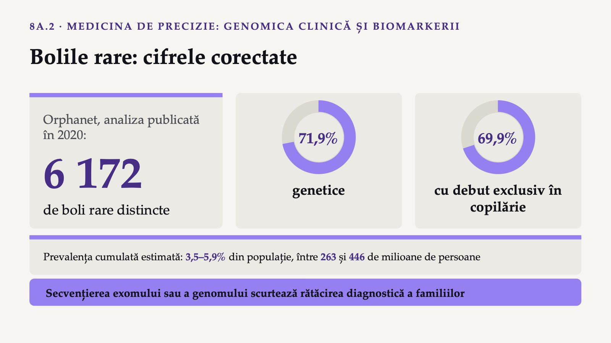
21 / 64Prezentarea vorbea de câteva mii de boli rare și de sute de milioane de pacienți; analiza bazei Orphanet dă valori mai precise. Rata diagnostică a secvențierii și durata medie a rătăcirii diagnostice, date de prezentare, nu au fost verificate.
Terapiile genice și editarea genomului (studiul de caz Casgevy)
![8A.2 · MEDICINA DE PRECIZIE: GENOMICA CLINICĂ ȘI BIOMARKERII Terapiile genice și editarea genomului (studiul de caz Casgevy) Copia funcțională a genei: onasemnogen abeparvovec (atrofia musculară spinală) voretigen neparvovec (o distrofie retiniană ereditară) etranacogen dezaparvovec (hemofilia B) Editarea celulelor stem: exagamglogen autotemcel (Casgevy), în drepanocitoză și în beta-talasemia dependentă de transfuzii Casgevy: FDA decembrie 2023 Uniunea Europeană autorizație condiționată din februarie 2024, de la 12 ani NICE TA1044 (26.02.2025, actualizată la 30.10.2026): numai în perioada unui acord de acces gestionat; de la 5 ani, cel puțin 2 crize vaso-ocluzive pe an în ultimii 2 ani, fără donator înrudit compatibil](diapozitive/C08/022.jpg) 22 / 64
22 / 64Problema de sănătate publică este o plată unică foarte mare pentru un beneficiu pe termen lung încă incert. Prețurile din prezentare nu au o sursă verificată. În Uniunea Europeană, autorizația a venit în februarie 2024, nu odată cu cea americană. Răspunsul instituțional englez este acordul de acces gestionat: medicamentul se folosește cât timp se adună dovezi noi. Afirmația prezentării că România nu compensa nicio terapie genică nu a fost verificată.
?
![8A.2 · MEDICINA DE PRECIZIE: GENOMICA CLINICĂ ȘI BIOMARKERII Medicina de precizie și echitatea; inteligența artificială (diapozitivul avansat) Studiile de asociere la nivelul genomului: 96% participanți de ascendență europeană în 2009; neeuropenii, aproape 20% în 2016 96% 20% Scorurile de risc calibrate pe europeni prezic mai prost în alte populații România: puțin reprezentată în bazele de date; o parte din populație nu ajunge nici la testele care există ? Inteligența artificială (clasificarea variantelor, structura proteinelor, radiomica): aceleași limite, date nereprezentative, lipsa validării externe, răspunderea pentru decizia clinică](diapozitive/C08/023.jpg) 23 / 64
23 / 64Bazele de date genomice incluzive sunt o propunere a prezentării, de discutat ca atare. Instrumentele de învățare automată ajută la clasificarea variantelor după criteriile Colegiului American de Genetică Medicală și Genomică și după bazele publice de variante; predicția structurii proteinelor a schimbat proiectarea moleculelor. Cifrele de performanță din prezentare nu au fost verificate.
?
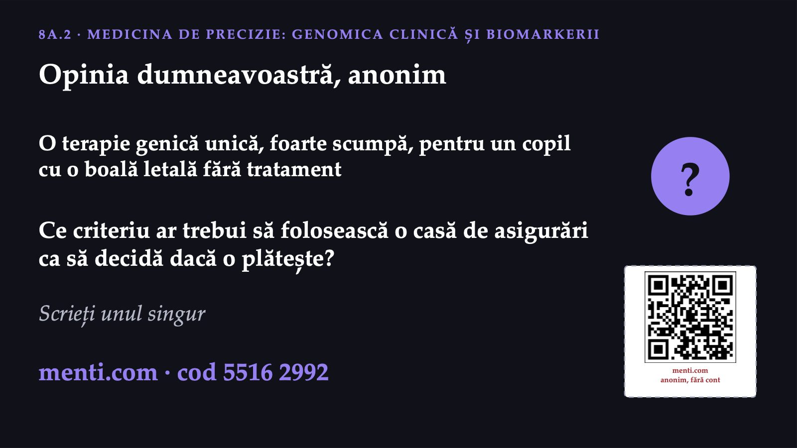
24 / 64Nu există un criteriu corect. Răspunsurile dumneavoastră revin la final, când împărțiți bugetul și terapia genică este una dintre cele cinci opțiuni.
8a.3 · Imunoterapia: inhibitorii punctelor de control imun
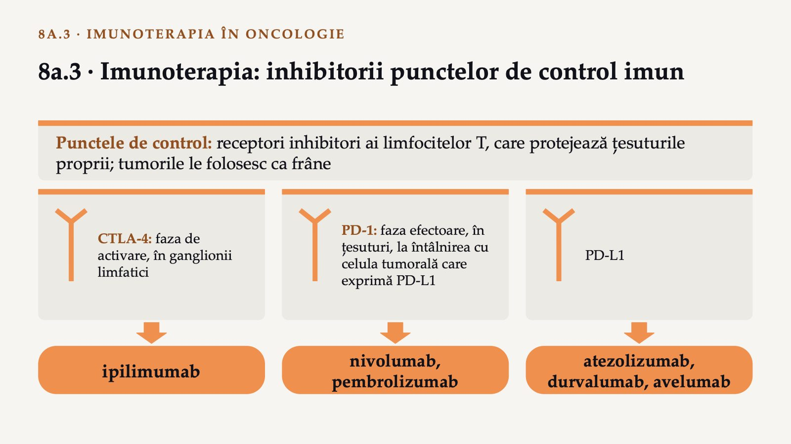
25 / 64Aici intră medicamentul pacientului nostru. Tumorile folosesc frânele imune ca să scape de distrugere, iar anticorpii care blochează aceste căi le ridică. Descoperirea principiului a fost răsplătită cu premiul Nobel din 2018.
Curba cu platou și cele trei probleme ale plătitorului
![8A.3 · IMUNOTERAPIA ÎN ONCOLOGIE Curba cu platou și cele trei probleme ale plătitorului Indicațiile: melanom cancer pulmonar fără celule mici carcinom renal și urotelial cancerele capului și gâtului limfom Hodgkin tumorile cu instabilitate a microsateliților Numai o parte dintre pacienți răspund, dar la unii răspunsul durează ani: curba face un platou Biomarkeri imperfecți: PD-L1, instabilitatea microsateliților, încărcătura mutațională tumorală Pentru sănătatea publică: durata tratamentului și regula de oprire testarea biomarkerului indicațiile noi, fiecare cu altă evaluare în România](diapozitive/C08/026.jpg) 26 / 64
26 / 64Aceste medicamente se dau până la progresie sau până la o toxicitate inacceptabilă, uneori ani, deci costul unui pacient se cumulează în timp, iar o regulă de oprire scrisă în protocol schimbă mult bugetul. Asocierea unui anticorp împotriva CTLA-4 cu unul împotriva PD-1 crește eficacitatea în unele tumori, cu prețul unei toxicități mai mari. Același medicament primește indicații noi aproape în fiecare an.
Celulele T cu receptor antigenic himeric (CAR-T)
![8A.3 · IMUNOTERAPIA ÎN ONCOLOGIE Celulele T cu receptor antigenic himeric (CAR-T) Limfocitele pacientului, recoltate prin afereză, modificate genetic ca să recunoască un antigen tumoral (de exemplu, CD19), multiplicate și reinfuzate: fabricație individuală Lanțul: afereza transportul, adesea în altă țară transducția cu un vector viral multiplicarea controlul de calitate întoarcerea Între timp: tratament de punte, apoi limfodepleție; un lanț de ordinul săptămânilor, pe care un pacient cu boală rapidă îl poate pierde Ținte: CD19 (leucemia acută limfoblastică cu celule B, refractară sau recidivată, și limfoame) · antigenul de maturare a celulelor B (mielomul multiplu)](diapozitive/C08/027.jpg) 27 / 64
27 / 64Celulele CAR-T sunt un medicament de terapie avansată, fabricat individual. Produsele autorizate pentru CD19 sunt tisagenlecleucel, axicabtagen ciloleucel, brexucabtagen autoleucel și lisocabtagen maraleucel; pentru mielom, idecabtagen vicleucel și ciltacabtagen autoleucel. Durata lanțului de fabricație este o problemă clinică și organizatorică în același timp.
Ce cere organizarea tratamentului cu celule CAR-T
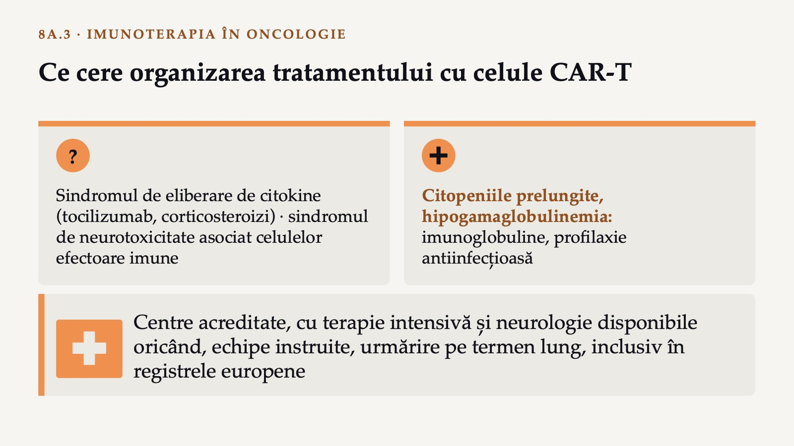
28 / 64Neurotoxicitatea merge de la confuzie la edem cerebral. De aici rezultă cerințele de organizare, care sunt și cerințe de planificare a serviciilor. Ratele de remisie date de prezentare pentru studiile pivot nu au putut fi verificate pe textul integral al studiilor.
Reacțiile adverse mediate imun
 29 / 64
29 / 64Ridicarea frânelor imune nu se oprește la tumoră. Miocardita este rară, dar poate fi letală. Frecvențele reacțiilor adverse date de prezentare variază mult între studii și între asocieri și nu le preluăm.
Unde ajunge, de fapt, pacientul cu o reacție adversă
![8A.3 · IMUNOTERAPIA ÎN ONCOLOGIE Unde ajunge, de fapt, pacientul cu o reacție adversă La medicul de familie sau în unitatea de primiri urgențe (UPU), cu diaree, oboseală sau dispnee Dacă medicul nu știe de imunoterapie: tratează o gastroenterită sau o pneumonie și pierde timpul în care corticosteroizii ar fi oprit leziunea Răspunsurile de sistem, simple și ieftine: cardul pacientului, cu medicamentul și telefonul centrului formarea medicilor de familie și a urgențiștilor circuite rapide spre endocrinologie și cardiologie](diapozitive/C08/030.jpg) 30 / 64
30 / 64Pentru organizarea îngrijirii, problema reală este că pacientul nu se prezintă la oncolog cu aceste simptome. Soluțiile nu cer tehnologie nouă, ci informație care circulă între niveluri.
Rezistența și generația următoare (diapozitivele avansate)
![8A.3 · IMUNOTERAPIA ÎN ONCOLOGIE Rezistența și generația următoare (diapozitivele avansate) Celulele CAR-T în tumorile solide: antigene neomogene, pătrundere greoaie, micromediu imunosupresor, epuizarea celulelor Rezistența la inhibitori: primară, în tumorile „reci”; dobândită, prin pierderea prezentării antigenului, mutațiile căii JAK1/2 sau pierderea CD19 Factorii pacientului: microbiomul intestinal, antibioticele și corticosteroizii dați înaintea imunoterapiei Celulele NK și macrofagele cu receptor antigenic himeric: de la donatori, „gata de folosit”; în studii timpurii](diapozitive/C08/031.jpg) 31 / 64
31 / 64Pentru sănătatea publică, rezistența înseamnă că o parte importantă din cheltuială se face la pacienți care nu beneficiază, deci că biomarkerii mai buni și regulile de oprire sunt și o problemă de buget. Dacă terapia celulară devine alogenă și produsă în serie, se schimbă radical costul, timpul de așteptare și numărul de centre care o pot oferi.
?
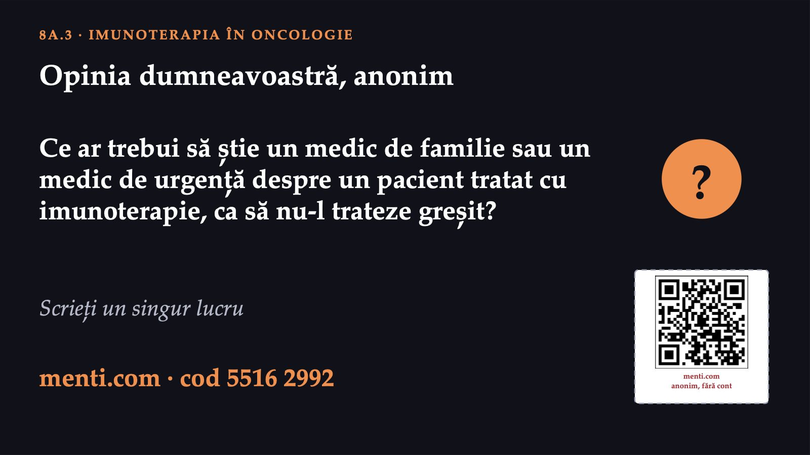
32 / 64Răspunsurile dumneavoastră sunt, de fapt, conținutul unui card al pacientului sau al unei formări scurte pentru medicii de familie.
Pauză
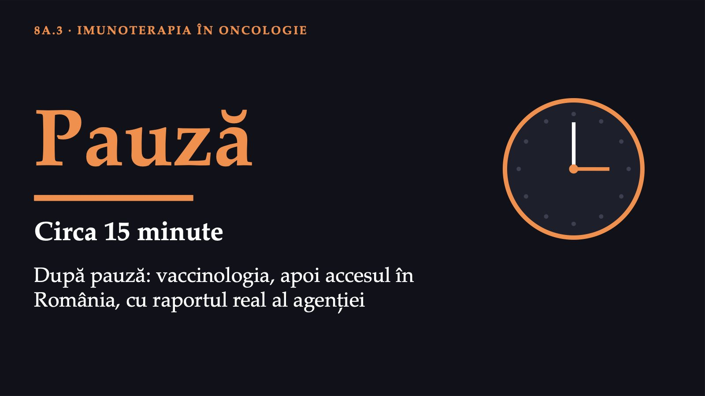
33 / 64Urmează vaccinologia, apoi accesul în România, pe raportul real al agenției.
8a.4 · Vaccinologia: platforma ARN mesager
![8A.4 · BIOTEHNOLOGIA ÎN VACCINOLOGIE 8a.4 · Vaccinologia: platforma ARN mesager Vaccinul aduce instrucțiunea, nu antigenul: ARN-ul în nanoparticule lipidice ajunge în citoplasmă unde ribozomii traduc antigenul ARN-ul se degradează în câteva zile și nu intră în nucleu Nucleozidele modificate au rezolvat reacția inflamatorie la ARN-ul străin (premiul Nobel din 2023) Avantaje: viteza, producția standardizată, adaptarea la variante limite: lanțul de frig, reactogenitatea, miocardita rară (mai frecventă la bărbații tineri, după a doua doză), încrederea publicului](diapozitive/C08/034.jpg) 34 / 64
34 / 64Secvența unui antigen se poate transforma într-un vaccin-candidat în câteva săptămâni, cu un proces de producție identic pentru antigene diferite. Cifrele de eficacitate din studiile de fază 3, date de prezentare, nu au fost verificate pe textul integral al studiilor.
După COVID-19: vaccinul individualizat împotriva cancerului
![8A.4 · BIOTEHNOLOGIA ÎN VACCINOLOGIE După COVID-19: vaccinul individualizat împotriva cancerului Secvențierea tumorii fiecărui pacient neoantigenele lui un ARN mesager propriu Studiu randomizat de fază 2b, publicat în 2024, melanom rezecat: mRNA-4157 + pembrolizumab, față de pembrolizumab singur Raportul de risc pentru recidivă sau deces: 0,561 (IÎ 95% 0,309–1,017; p = 0,053) fără recidivă la 18 luni: 79% față de 62% 1 Intervalul de încredere include 1: un semnal promițător, nu o dovadă; confirmarea cere un studiu de fază 3](diapozitive/C08/035.jpg) 35 / 64
35 / 64Platforma este folosită acum și dincolo de COVID-19: un vaccin cu ARN mesager împotriva virusului sincițial respirator la vârstnici a ajuns la autorizare. Studiul cu vaccinul individualizat a testat adăugarea lui la pembrolizumab, nu înlocuirea. Pentru sistemul de sănătate, un astfel de tratament cere secvențierea tumorii, bioinformatică și fabricație individuală pentru fiecare pacient, adică exact infrastructura pe care un sistem fără laboratoare genomice în oncologie nu o are.
Particulele asemănătoare virusurilor și vaccinarea HPV
![8A.4 · BIOTEHNOLOGIA ÎN VACCINOLOGIE Particulele asemănătoare virusurilor și vaccinarea HPV Proteine structurale recombinante, asamblate într-o capsidă fără genom: arată ca virusul, dar nu pot infecta Vaccinurile împotriva virusului papiloma uman (HPV): proteina L1 vaccinul împotriva hepatitei B: antigenul de suprafață recombinant Previn cancerul de col uterin și o parte din cancerele anale, orofaringiene, vulvare, vaginale și peniene; efect maxim înaintea începerii vieții sexuale Pentru România, întrebarea este acoperirea vaccinării, nu disponibilitatea vaccinului](diapozitive/C08/036.jpg) 36 / 64
36 / 64Vaccinarea HPV este considerată, în general, o intervenție cu un raport bun între cost și câștigul de sănătate, iar Organizația Mondială a Sănătății a făcut din eliminarea cancerului de col uterin un obiectiv global. Cifrele de acoperire din prezentare nu au o sursă verificată. Vaccinarea HPV este una dintre cele cinci opțiuni din exercițiul de la final.
Vaccinurile terapeutice și vaccinul împotriva HIV
![8A.4 · BIOTEHNOLOGIA ÎN VACCINOLOGIE Vaccinurile terapeutice și vaccinul împotriva HIV Vaccinul terapeutic tratează: un produs din celule dendritice autologe în cancerul de prostată; vaccinurile individualizate cu ARN mesager HIV: studiile de eficacitate, oprite unul după altul pentru lipsa protecției Motivele: variabilitatea virusului integrarea lui timpurie în genomul celulelor-gazdă lipsa unui corelat imun de protecție Între timp: profilaxia înainte de expunere, tratamentul ca prevenție și, în studiu, anticorpii cu acțiune lungă](diapozitive/C08/037.jpg) 37 / 64
37 / 64Vaccinul împotriva HIV rămâne cel mai lung eșec al vaccinologiei. Strategiile actuale încearcă să inducă anticorpi cu neutralizare largă, prin imunogeni livrați tot prin ARN mesager. Prevenția se face, între timp, cu instrumentele care există.
?
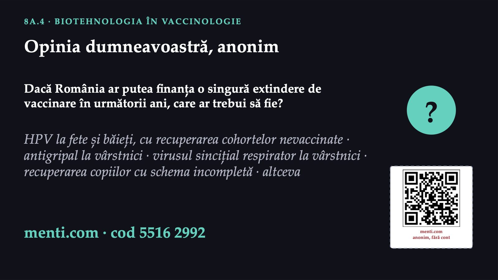
38 / 64Întrebarea cere o opinie. Ne interesează distribuția răspunsurilor, nu o variantă câștigătoare.
8a.5 · Accesul echitabil: autorizarea
![8A.5 · ACCESUL ECHITABIL ȘI REGLEMENTAREA 8a.5 · Accesul echitabil: autorizarea Procedura centralizată, obligatorie pentru medicamentele biotehnologice, de terapie avansată, pentru cancer și orfane: comitetele EMA avizul decizia Comisiei, valabilă în toate statele membre Căile rapide: autorizarea condiționată (date incomplete, dovezi suplimentare, reînnoire anuală) evaluarea accelerată sprijinul timpuriu pentru medicamentele prioritare circumstanțele excepționale FDA: desemnarea de terapie inovatoare, aprobarea accelerată, evaluarea prioritară Autorizarea răspunde la „funcționează?”, nu la „merită plătit, la acest preț, din acest buget?”](diapozitive/C08/039.jpg) 39 / 64
39 / 64A doua întrebare rămâne în fiecare țară, la autoritatea de evaluare a tehnologiilor medicale și la plătitor. Cazul nostru arată distanța dintre ele: decizia europeană nu a însemnat nimic pentru pacientul din România până nu au urmat pașii naționali. Casgevy are o autorizație condiționată. Termenele procedurilor date de prezentare nu au fost verificate pe textele oficiale.
Evaluarea tehnologiilor medicale (ETM)
![8A.5 · ACCESUL ECHITABIL ȘI REGLEMENTAREA Evaluarea tehnologiilor medicale (ETM) Analiza sistematică a eficacității, siguranței, costurilor și consecințelor unei tehnologii noi, față de alternativa folosită acum, ca bază pentru decizia de finanțare Raportul cost-eficacitate incremental: diferența de cost împărțită la diferența de efect Anul de viață ajustat după calitate (QALY): un an în sănătate deplină valorează un an; un an într-o stare cotată la jumătate valorează jumătate de an Agențiile care folosesc un prag explicit compară raportul cu suma pe care sistemul e dispus să o plătească; NICE folosește un asemenea prag](diapozitive/C08/040.jpg) 40 / 64
40 / 64Raportul cost-eficacitate incremental se citește ca prețul plătit pentru fiecare an de viață în sănătate deplină câștigat în plus. Evaluarea privește și consecințele organizatorice, etice și sociale ale tehnologiei. Pragurile numerice ale NICE nu le avem verificate în registru.
Pembrolizumabul la NICE, pentru prima linie în cancerul pulmonar
![8A.5 · ACCESUL ECHITABIL ȘI REGLEMENTAREA Pembrolizumabul la NICE, pentru prima linie în cancerul pulmonar TA447 (2017), citată de ANMDMR: raport cost-eficacitate incremental între £ 46 083 și £ 61 577 pe an de viață ajustat după calitate TA531 (2018): recomandat numai cu oprirea tratamentului după 2 ani neîntrerupți și numai în cadrul unui acord comercial cu producătorul Prelungirea vieții: aproape 16 luni față de chimioterapie; estimarea cea mai plauzibilă, în intervalul acceptat de obicei pentru tratamentele de la sfârșitul vieții](diapozitive/C08/041.jpg) 41 / 64
41 / 64Institutul Național pentru Sănătate și Excelență în Îngrijire din Anglia (NICE) a evaluat medicamentul de două ori. Observați cum regula de oprire și acordul comercial au transformat o recomandare negativă într-una pozitivă, fără ca molecula să se schimbe.
Acordurile de acces gestionat și instrumentele din România
![8A.5 · ACCESUL ECHITABIL ȘI REGLEMENTAREA Acordurile de acces gestionat și instrumentele din România Financiare: reducerea confidențială, acordul cost-volum, plafonul de cheltuieli pe pacient; prețul efectiv scade, prețul de listă rămâne Legate de rezultat: plata numai pentru pacienții care răspund, datele din viața reală înaintea unei decizii definitive România, din 2015: contracte cost-volum sau cost-volum-rezultat pentru medicamentele incluse condiționat în listă Taxa de recuperare, din 2011, după Legea 53/2020: 15% pentru medicamentele produse în țară 25% pentru inovatoarele din import 20% pentru genericele din import](diapozitive/C08/042.jpg) 42 / 64
42 / 64Acordurile de acces gestionat sunt răspunsul la incertitudine și la preț. Cele legate de rezultat mută o parte din risc la producător. Taxa de recuperare este o contribuție trimestrială a producătorilor, calculată din vânzările compensate.
Regulamentul (UE) 2021/2282: evaluarea clinică comună
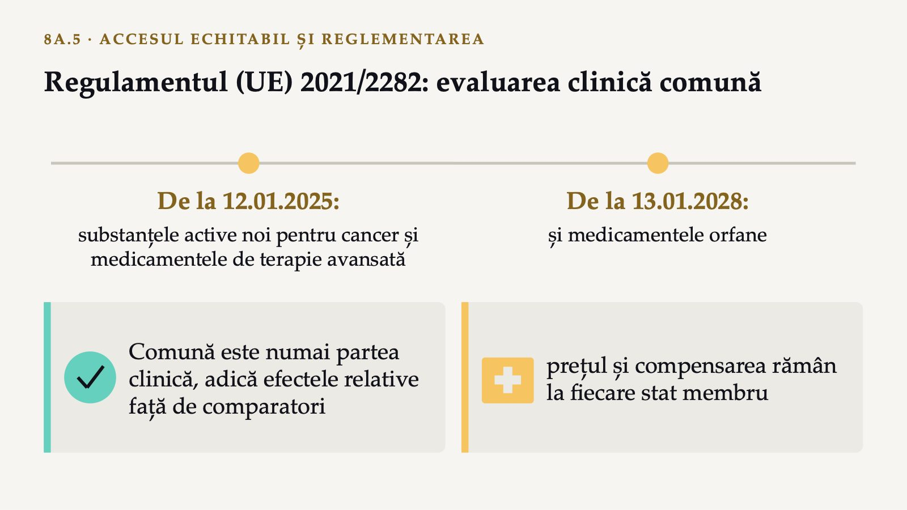
43 / 64Pentru România, care, cum vom vedea în raportul agenției, își construiește evaluarea în mare parte din deciziile altor țări, raportul comun poate scurta munca, dar nu înlocuiește întrebarea despre buget.
Modelele de preț și suveranitatea farmaceutică (diapozitivele avansate)
![8A.5 · ACCESUL ECHITABIL ȘI REGLEMENTAREA Modelele de preț și suveranitatea farmaceutică (diapozitivele avansate) Prețul de listă reflectă ce acceptă să plătească piețele cele mai bogate, nu costul de producție Terapiile cu administrare unică: plata eșalonată, oprită dacă efectul dispare, sau plata după rezultat · antibioticele noi: o sumă fixă pentru acces, indiferent de volum România: prețul se compară cu cel din 12 țări de referință și nu poate depăși valoarea cea mai mică; lista compensată se actualizează, din 2014, după evaluările ETM ? Suveranitatea: dependența de puțini producători pentru substanțele active; care medicamente esențiale, dacă lipsesc o lună, opresc un program național?](diapozitive/C08/044.jpg) 44 / 64
44 / 64Referențierea externă a prețurilor dă unui producător un motiv să lanseze mai târziu un medicament în țările unde prețul ar fi mic, ca să nu coboare prețul de referință pentru celelalte. Este una dintre explicațiile posibile ale așteptării mai lungi în estul Uniunii, de verificat cu date, nu de presupus. Producția europeană a biosimilarelor și a vaccinurilor, achizițiile comune și stocurile strategice sunt propuneri de politică ale prezentării, de discutat ca atare.
Pacientul nostru a început chimioterapia în ianuarie 2017
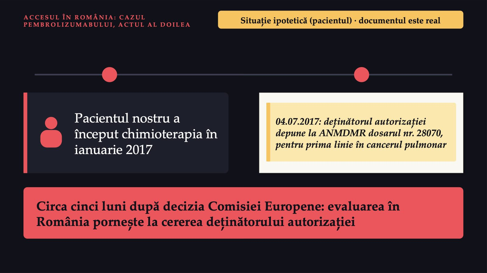
45 / 64Revenim la pacient. În România, evaluarea nu începe când Comisia decide, ci când deținătorul autorizației depune dosarul. Acum citim împreună, pe ecran, raportul real al agenției.
Raportul ANMDMR nr. 28070, pe ecran: datele generale
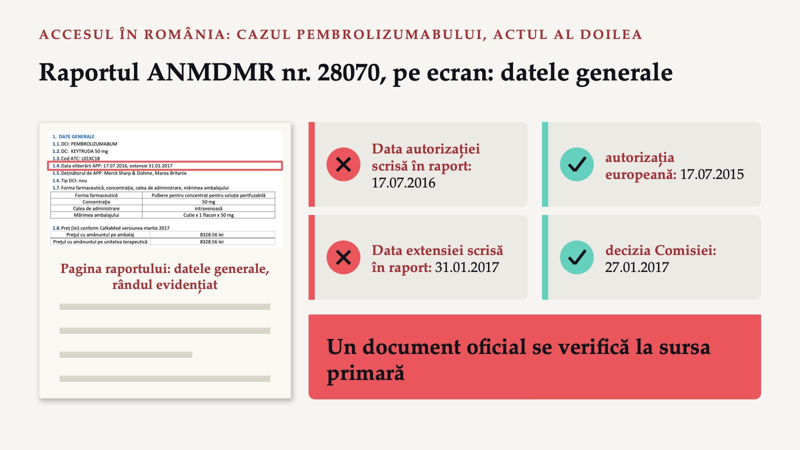
46 / 64Primul lucru pe care îl face un evaluator este să verifice datele. Raportul dă data autorizației ca 17.07.2016, deși autorizația europeană datează din 17.07.2015, iar data extensiei diferă cu patru zile de decizia Comisiei. Un specialist care citează documentul trebuie să verifice datele la sursa primară.
Evaluările internaționale: avizul autorității franceze (HAS) asupra studiului Keynote-024
![ACCESUL ÎN ROMÂNIA: CAZUL PEMBROLIZUMABULUI, ACTUL AL DOILEA Evaluările internaționale: avizul autorității franceze (HAS) asupra studiului Keynote-024 Pembrolizumab față de chimioterapia pe bază de platină Supraviețuirea fără progresie mediană: 10,3 față de 6 luni, un câștig de 4,3 luni; raportul de risc 0,50 (IÎ 95% 0,37–0,68) 10,3 6 Supraviețuirea globală: mediana neatinsă; raportul de risc 0,6 (0,41–0,89; p = 0,005), deși 44% din brațul cu chimioterapie trecuseră pe pembrolizumab Rata răspunsului obiectiv: 44,8% față de 27,8% 44,8% 27,8%](diapozitive/C08/047.jpg) 47 / 64
47 / 64Raportul agenției pornește de la avizul Înaltei Autorități de Sănătate din Franța (HAS) asupra studiului pivot. Observați trecerea pacienților din brațul de control pe pembrolizumab: ea face ca diferența de supraviețuire globală să fie mai greu de măsurat.
566 342
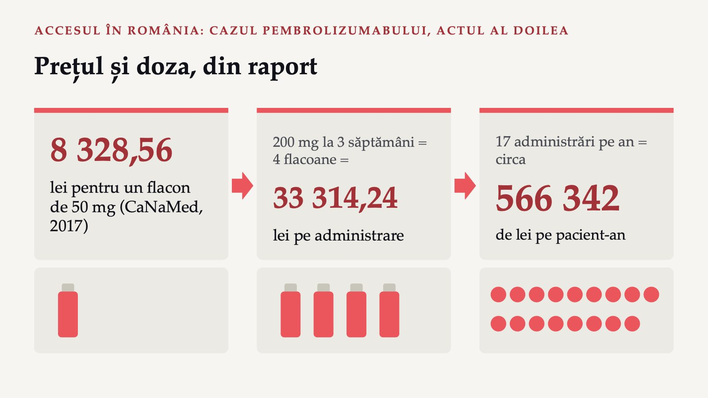
48 / 64Calculul este simplu și îl puteți reface oricând din prețul de catalog și din doză. Țineți minte suma pe an: ea revine în cele o sută de puncte.
Grila de la punctul 5 al raportului
 49 / 64
49 / 64Punctajul se construiește pe o grilă fixă, stabilită prin ordinul ministrului sănătății nr. 861/2014; lista de referință este cea aprobată prin Hotărârea Guvernului nr. 720/2008. Ce decizie susține acest total și ce trebuie să urmeze scrieți dumneavoastră, în activitatea care urmează; pragurile ordinului nu le avem.
Activitate individuală, circa 20 de minute: concluzia raportului, scrisă de evaluator
![ACCESUL ÎN ROMÂNIA: CAZUL PEMBROLIZUMABULUI, ACTUL AL DOILEA Activitate individuală, circa 20 de minute: concluzia raportului, scrisă de evaluator Primiți raportul nr. 28070 fără punctele 6 și 7 Citiți grila linie cu linie; găsiți în raport pasajul pe care se sprijină fiecare linie Scrieți concluzia, în cel mult zece rânduri: ce decizie susține punctajul · pe ce se sprijină · ce nu a judecat grila · ce recomandați mai departe (protocolul, biomarkerul și pragul lui, regula de oprire, contractul) Nu există o variantă de bifat: la final comparați textul cu punctele 6 și 7 Raportul nr. 28070, punctele 1–5 (PDF) punctele 1–5 fișier PDF](diapozitive/C08/050.jpg) 50 / 64
50 / 64Lucrați singuri, ca un evaluator al agenției. Raportul conține datele generale, evaluările internaționale, statutul de compensare în statele membre, ghidurile clinice, calculul costurilor terapiei și grila. Scrieți pe foaia primită sau în fișier. La final proiectăm ce a scris agenția și fiecare își compară textul.
20 de minute
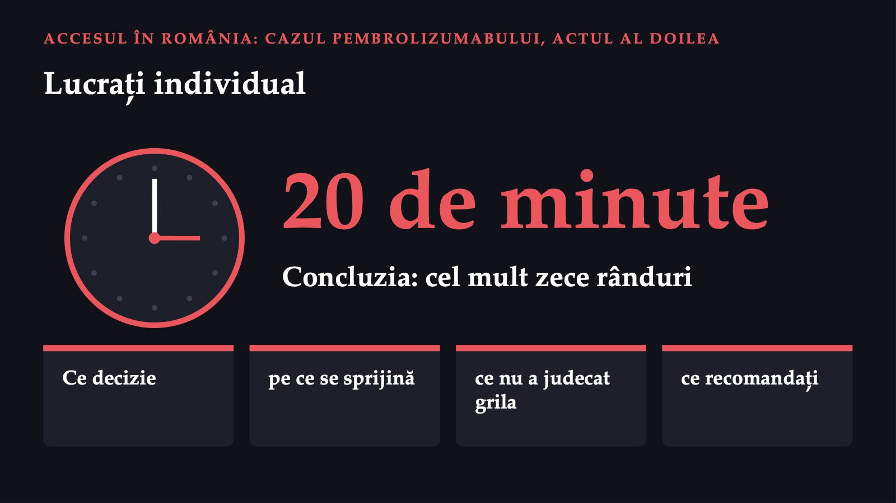
51 / 64Aveți douăzeci de minute. Fiecare lucrează pe textul lui; la final comparăm cu raportul.
Ce a scris agenția (punctele 6 și 7)
![ACCESUL ÎN ROMÂNIA: CAZUL PEMBROLIZUMABULUI, ACTUL AL DOILEA Ce a scris agenția (punctele 6 și 7) Totalul de 70 de puncte înseamnă, după OMS 861/2014, admiterea condiționată în listă Pct. 6: „Pembrolizumabum întrunește punctajul de admitere condiționată în Lista care cuprinde denumirile comune internaționale corespunzătoare medicamentelor de care beneficiază asigurații, cu sau fără contribuție personală, pe bază de prescripție medicală, în sistemul de asigurări sociale de sănătate.” Pct. 7: elaborarea protocolului terapeutic pentru exact această indicație, cu pragul PD-L1 de 50% și fără mutații EGFR sau ALK Comparați: ce ați scris în plus și ce lipsește din amândouă](diapozitive/C08/052.jpg) 52 / 64
52 / 64Agenția a scris concluzia într-o singură frază, la punctul 6, iar recomandarea, la punctul 7. Comparați-le cu textul dumneavoastră: ce ați scris în plus și ce lipsește din amândouă.
1.
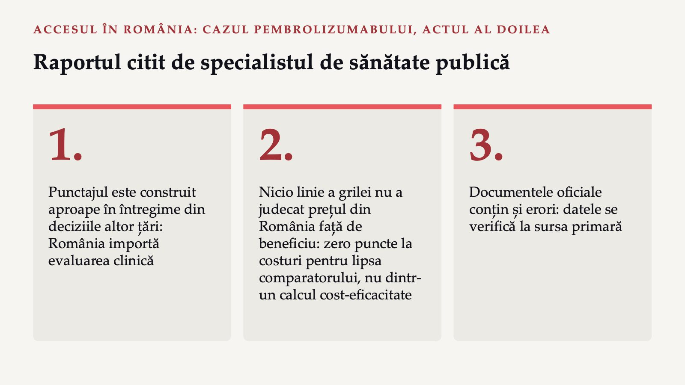
53 / 64Sub criteriul evaluării bazate pe cost-eficacitate, o linie punctează recomandarea britanică și scoțiană, făcută la prețul acelor țări, iar alta, existența raportului german. Evaluarea engleză pe care o citează agenția avea un raport cost-eficacitate, cu un preț redus confidențial; cea românească nu are.
?
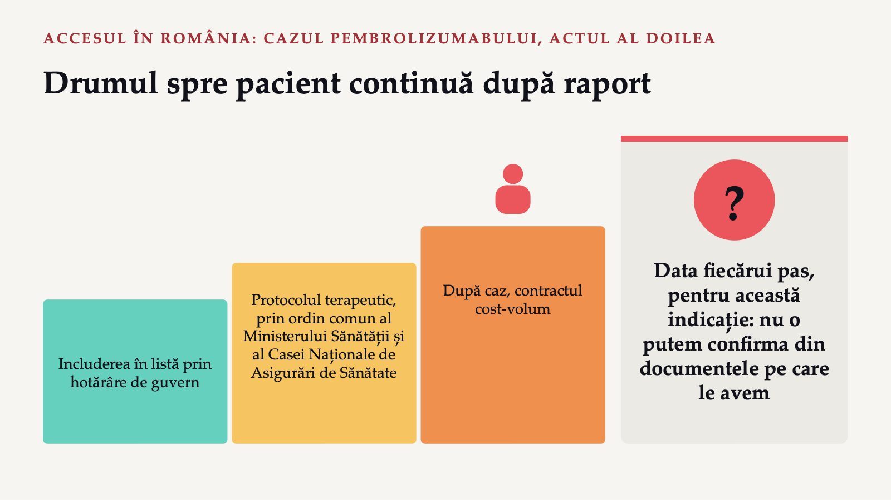
54 / 64Distanța dintre decizia europeană și pacient nu este o particularitate a acestui medicament: pe ultima ediție a raportului industriei, media europeană a așteptării este de 597 de zile. Componentele așteptării se citesc pe cazul nostru: timpul până la depunerea dosarului, timpul evaluării, frecvența actualizării listei prin hotărâre de guvern, elaborarea protocolului și, după caz, negocierea contractului cost-volum.
?
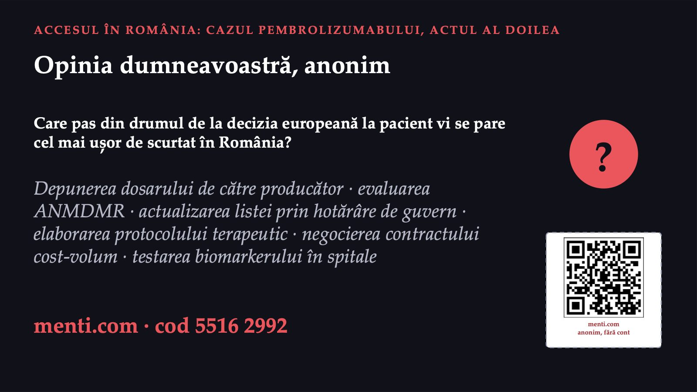
55 / 64Întrebarea cere o opinie. O comparăm cu ce ați scris la începutul ședinței, despre ce întârzie accesul.
Cele 100 de puncte: împărțiți un buget
 56 / 64
56 / 64Fiecare dintre dumneavoastră împarte, anonim, o sută de puncte între cinci opțiuni de finanțare pentru anul următor. După vot vedeți media răspunsurilor și, alături, consecințele calculate dinainte pentru trei profiluri de împărțire.
Media sălii și trei profiluri calculate (valori construite)
![CELE O SUTĂ DE PUNCTE: ACTUL AL TREILEA Media sălii și trei profiluri calculate (valori construite) Media sălii: rezultatul din Mentimeter, pe diapozitivul anterior A. Inovația de vârf (40 / 30 / 30 / 0 / 0): 70 de pacienți cu imunoterapie, 17 cu celule CAR-T, 3 cu terapie genică; circa 139 de ani de viață ajustați după calitate B. Împărțit egal (câte 20): 35 · 11 · 2 · 1 333 cu biosimilare · 20 000 de fete vaccinate; circa 685 de ani C. Prevenția și biosimilarele întâi (20 / 0 / 0 / 40 / 40): 35 · 2 666 cu biosimilare · 40 000 de fete vaccinate; circa 1 217 ani; niciun copil cu celule CAR-T, niciun pacient cu terapie genică](diapozitive/C08/057.jpg) 57 / 64
57 / 64Valorile sunt ipotetice, construite pentru exercițiu; numai prețul flaconului de pembrolizumab este real. Imunoterapia costă 566 342 de lei pe pacient-an și aduce 0,5 ani de viață ajustați după calitate pe pacient. Celulele CAR-T costă 1,7 milioane de lei pe pacient și aduc 4 ani, cu cel mult 30 de copii și adulți tineri eligibili. Terapia genică costă 10 milioane de lei pe pacient și aduce 12 ani, cu cel mult 15 pacienți eligibili. Biosimilarele costă 15 000 de lei pe pacient-an, pentru 0,15 ani câștigați, cu cel mult 3 000 de pacienți. Vaccinarea HPV costă 1 000 de lei pe fată vaccinată și aduce 0,02 ani, cu cel mult 90 000 de fete. Banii care nu ajung pentru un pacient întreg sau care depășesc plafonul rămân necheltuiți.
Cine a „câștigat”? Nu aceasta este întrebarea
![CELE O SUTĂ DE PUNCTE: ACTUL AL TREILEA Cine a „câștigat”? Nu aceasta este întrebarea Profilul cu cel mai mare câștig total lasă netratați copiii cu leucemie refractară și pacienții cu boli genetice letale Trei principii care nu pot fi satisfăcute simultan: maximizarea câștigului de sănătate prioritatea celor mai grav bolnavi regula salvării Sistemele reale le transformă în reguli explicite: praguri mai permisive pentru bolile rare și sfârșitul vieții, fonduri separate, acorduri de acces gestionat Limitele modelului: câștigurile viitoare se actualizează câștigul terapiei genice e incert plafoanele sunt construite o parte din bani merge la infrastructură prețurile reale nu le avem](diapozitive/C08/058.jpg) 58 / 64
58 / 64Regula salvării este impulsul moral de a salva o persoană identificată, aflată în pericol imediat, oricât ar costa. Beneficiul vaccinării HPV apare după decenii, iar în evaluările reale câștigurile viitoare se actualizează, ceea ce le micșorează. Ordinea opțiunilor după costul pe an de viață câștigat se schimbă dacă se schimbă prețurile, iar prețurile reale ale celulelor CAR-T și ale terapiei genice în România nu le avem.
Agenda accesului echitabil (propunerile prezentării)
![ÎNCHEIEREA: ÎNTOARCEREA LA PACIENT Agenda accesului echitabil (propunerile prezentării) Evaluarea comună europeană, folosită ca să scurteze evaluarea națională, nu ca să o dubleze achiziții comune pentru medicamentele foarte scumpe Biosimilarele încurajate prin protocoalele de compensare prioritatea prevenției cu cost mic și efect mare, ca vaccinarea HPV Registre de rezultate pentru medicamentele admise condiționat transparența prețurilor efective Casgevy: autorizația condiționată și acordul de acces gestionat pembrolizumab: decizia din raport și, după caz, contractul; ambele cumpără timp pentru dovezi](diapozitive/C08/059.jpg) 59 / 64
59 / 64Cele două cazuri ale ședinței arată două instrumente pentru aceeași problemă. Ambele amână întrebarea „merită?”, cumpărând timp pentru dovezi; diferența este dacă, după acest timp, cineva se uită la rezultate și decide din nou.
Întoarcerea la pacient
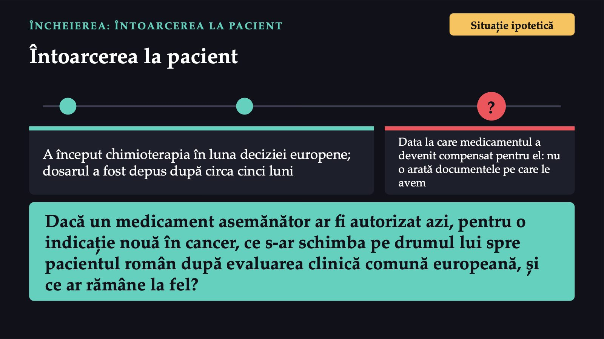
60 / 64Pentru un pacient cu cancer pulmonar metastatic, o așteptare de ordinul lunilor sau al anilor poate depăși timpul pe care îl are. Documentele reale nu arată, în ce avem, data la care medicamentul a devenit efectiv compensat pentru el, după hotărârea de guvern, protocol și, după caz, contract.
?
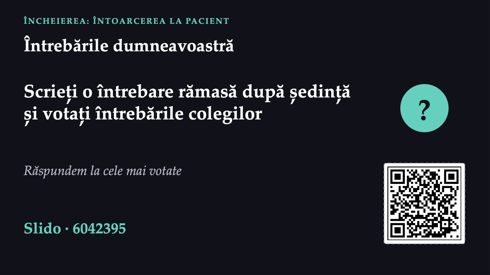
61 / 64Trei ore și cinci subteme lasă întrebări. Votați-le pe ale colegilor: cele mai votate primesc răspuns acum.
Ce reținem
![ÎNCHEIEREA: ÎNTOARCEREA LA PACIENT Ce reținem Medicamentele biologice nu sunt o clasă omogenă: fiecare mecanism cere alt circuit de monitorizare Biosimilarul demonstrează comparabilitatea, nu identitatea; este instrumentul de acces într-un buget limitat Un medicament de precizie fără testul care îl selectează nu ajunge la pacienți Autorizarea europeană răspunde la „funcționează?”, nu la „merită plătit?”; fiecare pas național adaugă timp Bugetul limitat pune în conflict câștigul total, prioritatea celor mai grav bolnavi și regula salvării; sistemele bune scriu reguli explicite](diapozitive/C08/062.jpg) 62 / 64
62 / 64Acestea sunt mesajele pe care le regăsiți la sfârșitul notelor, împreună cu întrebările de autoevaluare.
?
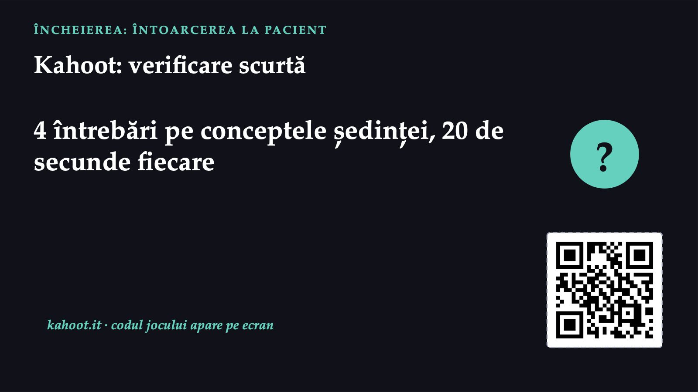
63 / 64Jocul verifică patru concepte ale ședinței: ținta pembrolizumabului, criteriul costurilor din raport, organizarea tratamentului cu celule CAR-T și citirea studiului cu vaccinul individualizat.
?
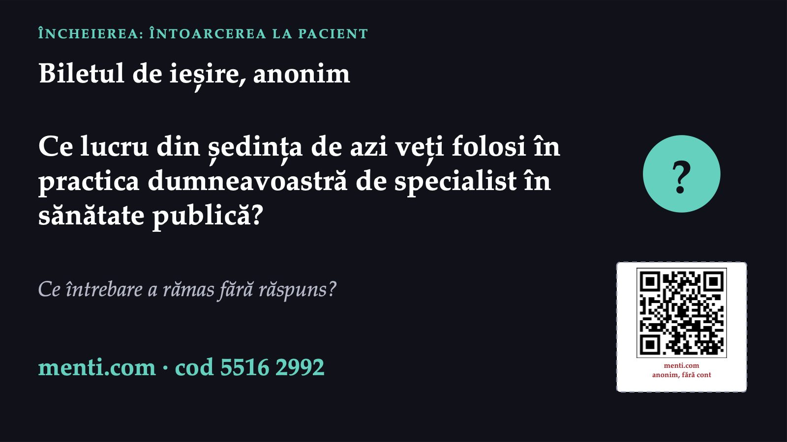
64 / 64Răspunsurile rămân anonime și ne ajută să pregătim ședința următoare. Vă mulțumesc.
Săgeți sau spațiu: navigare · O: vedere de ansamblu · N: notele prezentatorului · F: ecran complet · Esc: închidere